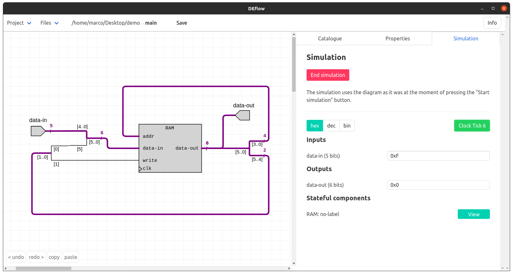

DEflow
As BEng thesis I created an open source electronic circuits designer and simulator. The application is much more modern and intuitive than existing alternatives, which were common choices in education. Starting from 2020, Imperial College Electrical, Electronic and Computer Engineers will be using my application to learn Digital Electronics.
The application (source code on github) was almost entirely developed using the F# functional programming language, together with React and Electron.